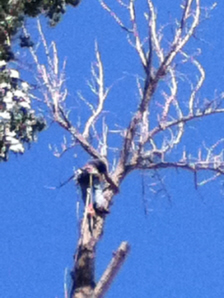
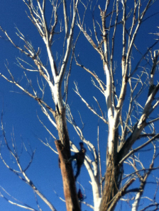
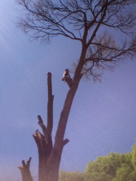

Grand Junction Tree Service
G.J. Tree Service specializes in all your tree care needs from a single limb hanging over your roof to detailing out the entire yard. Overgrown mature landscapes is also one of many types of tree jobs we love to take on. Each tree/shrub is unique and needs to be handled accordingly depending on it's unique features. Listed below is a small sample of the jobs we successfully take on. We LOVE a good challenge and look forward to giving you a free estimate on any project you need taken care of.
Some of the services offered in and around Grand Junction




